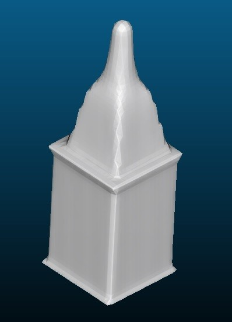
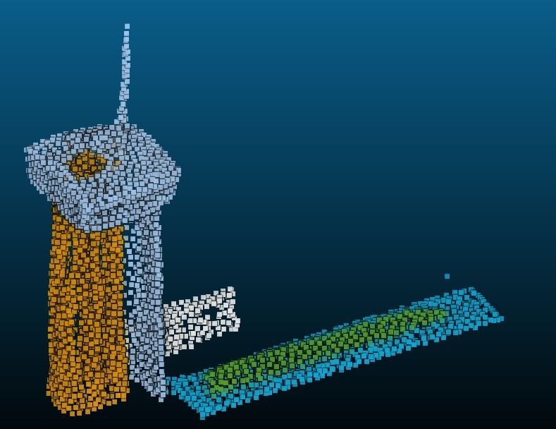

City Modelling with Generative AI: Tool or toy?
AI tools such as Chat-Gpt (text generation) and Dall-E (image generation) are making impressive leaps, allowing people to rapidly generate text, code and images from simple input prompts. The next frontier in generative AI may be 3D modelling, and OpenAI recently released the open source 3D modelling software Point·E. Could computer games, films and even architecture use these techniques to replace or improve manual city modelling?

33 3D mesh models, each generated from the text prompt "a buildng"
Point·E first uses a text to image diffusion model to generate a single image from a text prompt and then passes this image into a second diffusion model to create a 3D point cloud. And it is blazing quick compared to other approaches, creating a 3D point cloud from text in 2 minutes on the GPU of my laptop (a modest GeForce 1650). The provided code includes a method for converting the point cloud into a surface mesh. This works well for some models but struggles with fine details such as cables and grids.

Polygon mesh model generated from the text prompt "a building"
So how does it cope with generating buildings? The results are mixed and, as with AI image generation, it is a good idea to create multiple images and choose between them. I'm quite impressed by the diversity of forms created from slender towers to simple cubes to domed structures.
My early experiments suggest that Point·E is best at creating individual "bounded" boxy objects such as round fruit, cars, etc. Long linear objects such as bridges seem to be harder as they can have indistinct start and end points and may be composed of slender elements which do not convert neatly to a polygon mesh.
I downloaded the Python source code and used it to generate over 30 point clouds from the same input text "a building" and got a very wide range of results: all of these are shown in greyscale in the title image at the top of this page.
Curious colours
Rendered image of two buildings with blue-green walls and brown rooves polygon mesh model generated from the text prompt "a building" Whilst most of the generated buildings appear with sober colours : mostly grey, brown or tan, some have strange colour combinations with blue or green walls and, sometimes, red rooves. It looks like some additional colour prompting or recolouring the finished output may be needed.
Legal and ethical issues
The AI model is trained on a data set of models and images made by real people but the authors provide no information or guarantees on respect for copyright and licensing of the original works. Users should be made aware of the risks of bizarre or even dangerous (for some applications) outputs. Prejudice against and lack of representation of disadvantaged groups is likely to be present in available datasets and will probably appear in some form in the outputs, as it does with text and image generation techniques.
Tool or toy ?
I've had a lot of fun experimenting with this but could it be useful in the professional world? Clearly the results so far are pretty limited but here are some ideas for real-world use cases as the AI tech and associated tools develop:

pointcloud generated from the text prompt "a building"
- Computer games and film designers could use these techniques to generate unique virtual worlds. Careful prompt selection, colouring and surface texture choices could create dramatic effects with limited human intervention. First draft storybook models could be largely AI generated.
- Architects and urban physicists could use generative AI to create surrounds models for buildings surrounding a new planned building or masterplan. Whilst some detail may be needed on the planned building, in some cases the surrounds are only needed to set the project in an urban context, often no 3D model is available for the surroundings and the actual building forms may not be required.
- Generative design can give inspiration or baseline models for professional cad modellers. This is particularly appealing because most 3D design software needs good quality graphics cards. Those graphics cards could be put to use overnight generating dozens or hundreds of candidate 3D models, which the modeller could select from for the following day's work; recombining, reworking and colouring the models, just as professional artists and illustrators today use Dall-E to assist their own artistic creation.
- Generating 3D models of real buildings from photos: Point·E can be seeded from text or from an image.
- Generating 3D point clouds as inputs to train specialist classifiers. Specialist applications abound for point cloud scans and data sets are needed for testing and training purposes. Generative approaches could be useful here, particularly for simple classifiers which may not need very large training data sets.